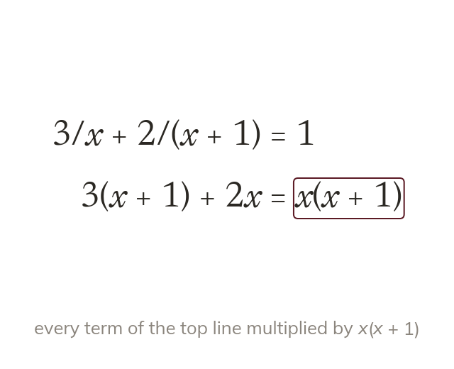

Multiply by both denominators
Multiply every term by the product of the denominators. A term with no denominator picks up both.
Two different algebraic denominators share no factor, so their product is the common denominator, and every term on both sides is multiplied by it. Each fraction keeps the factor it was missing, and a term with no denominator picks up both.